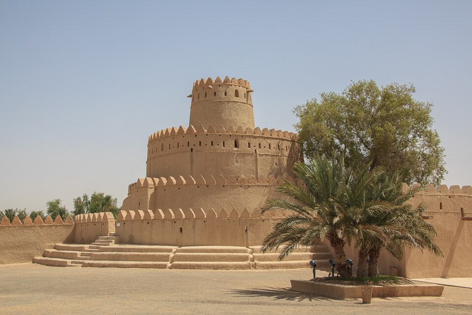
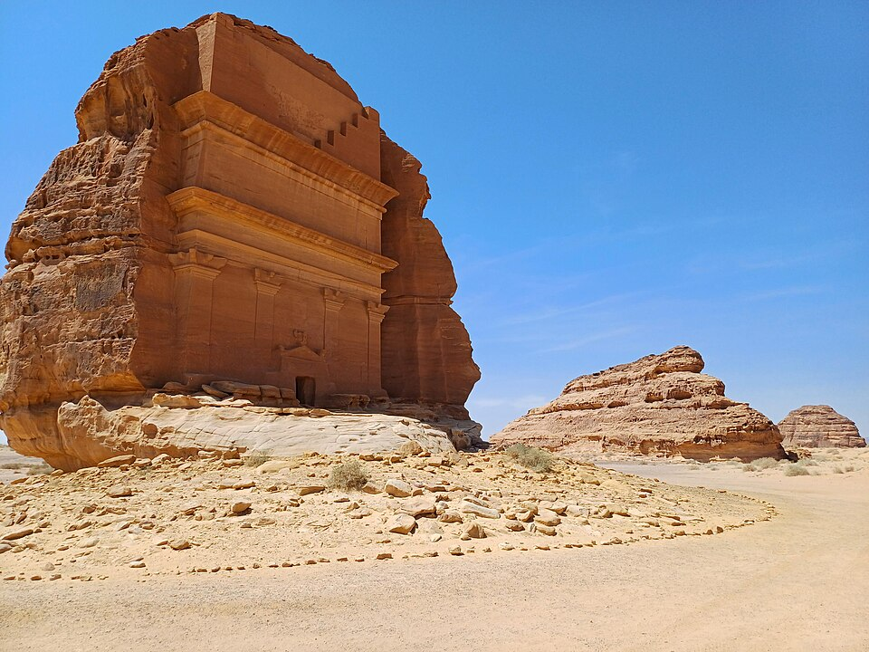
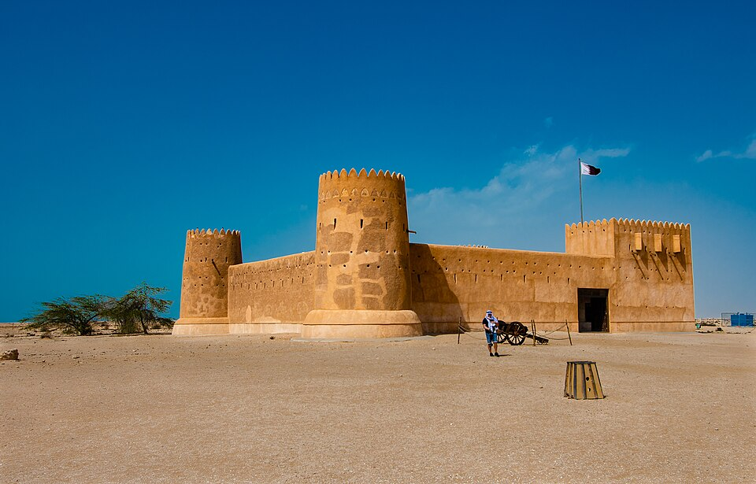
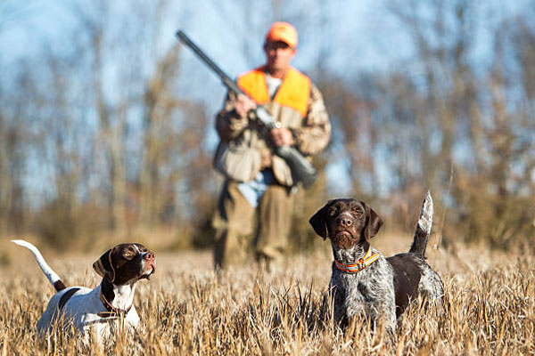
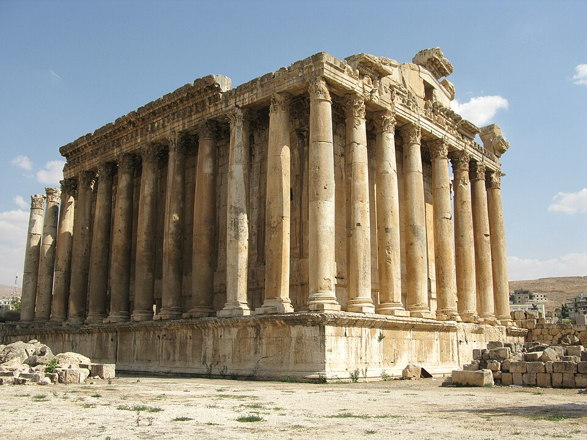
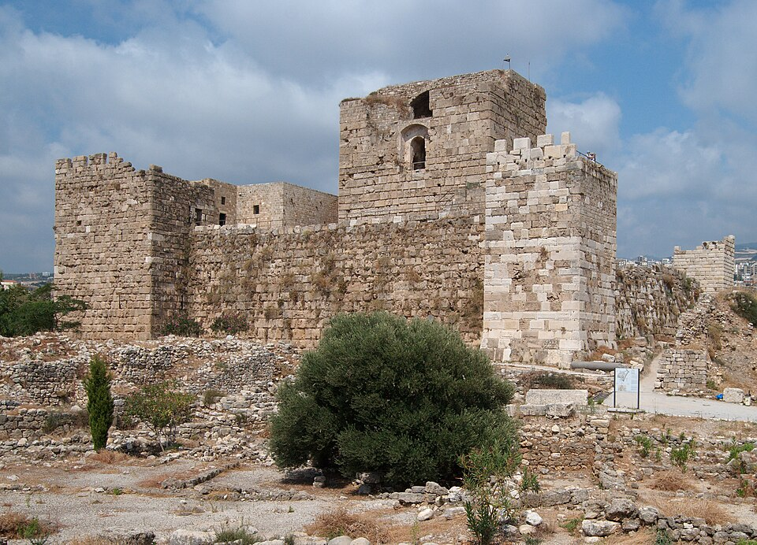

قوانين الصيد في الإمارات: حماية اتحادية وضوابط محلية للصقارة
حماية الحياة الفطرية اتحاديًا، وضوابط الصقارة المحلية في أبوظبي وحدود التصاريح.

حماية الحياة الفطرية اتحاديًا، وضوابط الصقارة المحلية في أبوظبي وحدود التصاريح.

قانون الزراعة والمادة 56: الرخص والأنواع المحمية والوسائل المحظورة، مع ضرورة التحقق من القرارات الموسمية.

مرجع لفهم نظام البيئة والترخيص والأنواع المحمية وحدود الصيد، مع فصل القانون عن القرارات الموسمية.

قراءة تشريعية في الترخيص وحماية الطيور وحظر الشباك والدبق والمناداة، استنادًا إلى نص قانون 2004 الأصلي كما تعرضه وزارة البيئة.

ست مواد قانونية تنظّم مناطق الصيد ووقته وتحمي الأعشاش والسلاحف وتحدّد العقوبات والمصادرة.

قراءة في التشريع العُماني المنظم للمحميات والتصاريح والمصادرة، مع تمييز القانون عن قرارات مواسم الصيد.

يجب على الصياد معرفة ما هو وضعه تجاه شركة التأمين عند حصول حادث... فهل تغطي له شركة التأمين جميع حوادث الصيد؟ وفي كل وقت؟ أوجد القانون شروط لتغطية شركات التأمين حوادث الصيد. وهذه…

حين نقول ان ثمة تحفظات على القانون من قبل الصيادين فهذا يتعلق بلائحة الطرائد والعدد المسموح صيده في كل رحلة، اذ ان خبرة الصيادين الميدانية لا يستهان بها ابدا، فهم القادرون على تحس…

في الفترة الماضية أدعت وزارة البيئة اللبنانية لدى المدعي العام البيئي على عدد من الصيادين اللبنانيين لمخالفتهم قانون الصيد عبر عرض المئات من الطرائد على مقدمات سيارتهم، في خطوة ان…
صور معالم البلدان. نُسخ مصغّرة مع قصّ العرض؛ ترخيص كل صورة موضح أدناه ويشمل نسختها المعروضة.